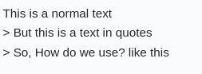
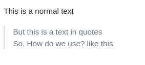
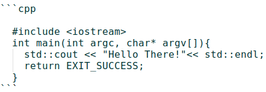

My Learning
It include the following but not limited to
- Linux basic
- Linux advanced
- vim
- Markdown
- //TODO
- Shell scripting
- C/C++
- CUDA
- Git/GitHub
- Web hosting
Linux Basic
A few shortcuts
ctrl + alt + T- Open terminalctrl + alt + <up/right/left>- Switch workspacectrl + alt + shift + <right/left>- Move current window to right/left workspacectrl + alt + <F1/F2/F3/F4/F5/F6>- Open TTY login (does not use GUI)ctrl + alt + <F7>- Leave TTY screen and switch to GUI<up/down>- Move back/forth the previously typed terminal commands
Basic commands
$ pwd # path of working directory
$ ls # list the contents of current directory
$ cd Music # changes the current directory to `Music` directory
$ cd .. # change the directory to one level up except at '/'
$ cd - # jumps to previous `pwd` before a `cd`
$ ls -l # long listing the file
$ ls -lrt # list file based on the modified date. recent at the last.
$ man ls # list manual pages for `ls`
$ ls --version # shows the version of `ls`. Sometimes it is `<cmd> -v`
pwd- path of working directoryls- list the contents of current working directory i.epwdcd folder- changes the current directory tofoldercd ..- change the directory to one level up except at '/'cd -- jumps to previouspwdbefore acdls -l- long listing of file/folderls -lrt- list file based on the modified date. recent at the lastman <cmd>- list manual pages for any valid linuxcmd<cmd> --version- shows the version of validcmd
Linux Administration
The easiest of all Linux distribution is Ubuntu. I have been using Linux along side from 2009, and from 2016 Linux is my main stream operating system. I have used Debian, Ubuntu, Fedora, OpenSUSE, and a few others. Thanks to my under-graduate projects and {TCE's FStival 2008](). But, now Linux Mint Cinnamon is my favourite (from 2017). I begin to dislike Unity-Gnome in Ubuntu, so moved to Mint. Am I ranting or self-trumpeting? Both. Okay, it is 2020. But still some commands are still in my muscle memory. I am just logging it here.
Admin commands
echo $HOME- Displays the home of user who run itls -a- Also list the hidden folders/files (it beging with a.) e.g.bashrcin $HOMEdf -h- List all mounted partition along with used/available/% sizetop- List all running process based on % of CPU usage. pressqto closedu -h .- List the file/folder size of current directorylscpu- List the processor detailslsusb- List of devices attached to the USB portcat /proc/meminfo- List the RAM/memory detailsdmesg | grep tty- Find thetty/devNamejust attached via USBless /var/log/auth.log- All login/out/suspend session are recored/var/log/*- has all the logs file e.g. apt-get log is in `/var/log/apt/history.logps -ef | grep firefox- List processes/id with the namefirefoxkill <pid>- Kill the process withsending sigterminate kill -9 <pid>- Kill the process withsending sigkill /home/<user>/.bashrc- User specific bashrc filesource .bashrc- Run and set bachrc file in current session/home/<user>/.bash_history- List of cmd typed by theuserecho $PATH- Displays the environment variablePATHPATH=$PATH:/usr/local/cuda-10.0/bin- Set path in shellexport PATH- will pass this env variable for subsequent commands ericssh username@ip-address# e.gssh rajesh@10.6.3.112scp localfile user@ip-address:/some/location/on/server
Installation
- Most of new machine. You may have to disable fastboot/safeboot in BIOS
- Download you favourite linux as
isofile - Burn iso to formatted USB/DVD using rufus, UNetbootin , usb-creator or Startup Disk creator
- Reboot and press the key F12/F10 (differ based on manufacturer) to bootfrom USB/DVD
- Mostly positive answer for moast. At select drive location, use MANUALLY
- Give appropriate drives "/", /home, and swap (/boot, /tmp optinal)
- You may leave it with / alone also.
- Upon installation and reboot. Grub will appear.
Markdown Syntax
Heading
# Heading 1
## Heading 2 ##
and so on till H6.
A short form for H1 and H2 is
Heading 1
=========
Heading 2
----------
Quoting text
| Syntax | Output |
|---|---|
|  |  |
Source code
This is inline `code` and
e.g. Use `git log` to see the commits.
- This is inline
codeand - e.g Use
git logto see the commits.
This is called code block or fenced code. You may specify the language.
#include <iostream>
int main(int argc, char* argv[]){
std::cout << "Hello There!"<< std::endl;
return EXIT_SUCCESS;
}

You may mention language from this list to enable syntax hightlighting at line 1.
Hyperlinks/Attachments
This is [Google](www.google.com) as a link.
This is Google as a link.


Text formatting
*This text will be italic* and _This will also be italic_
**This text will be bold** and __This will also be bold__
_We **can** combine both_
~~This text will be stricked-out~~
This text will be italic and This will also be italic
This text will be bold and This will also be bold
We can combine both
This text will be stricked-out
List
* one // Unordered
* two
* three
1. One // Ordered
2. Two
3. Three
- This is also
- Unordered
- An another way
Multi-level or nesting
- Can be nested
* One.One
* One.Two
- Can also be nested this way
1. Two.One
1. Two.Two. What?
1. You see this? auto-increment.
- Three
- Thread.One
- one // Unordered
- two
- three
- One // Ordered
- Two
- Three
- This is also
- Unordered
- An another way
Multi-level or nesting
- Can be nested
- One.One
- One.Two
- Can also be nested this way
- Two.One
- Two.Two. What?
- You see this? auto-increment.
- Three
- Thread.One
Horizontal rule
If you need horizontal rule then, use three
asterisks,
***
hyphens or underscores like the below.
---
Also, have a blank line before and after!
___
If you need horizontal rule then, use three asterisks,
hyphens or underscores like the below.
Also, have a blank line before and after!
Table
Header 1 | Header 2
-------- | -----------
cell 1x1 | cell 1x2
cell 2x1 | cell 2x2
| Header 1 | Header 2 |
|---|---|
| cell 1x1 | cell 1x2 |
| cell 2x1 | cell 2x2 |
you may use handy table generator website to generate large tables.
References
- From the author of Markdown
- Github Markdown Guide
- Markdownguide Cheat-sheet
- Markdownguide DOs and DONTs
Not part of markdown
This search engine [1] is lot better than [2] and [3]
[1] - www.google.com
[2] - www.yahoo.com
[3] - www.bing.com
This search engine [1] is lot better than [2] and [3] Here's a sentence with a footnote. [^4].
[1] - www.google.com [2] - www.yahoo.com [3] - www.bing.com [^4]: This is the footnote.